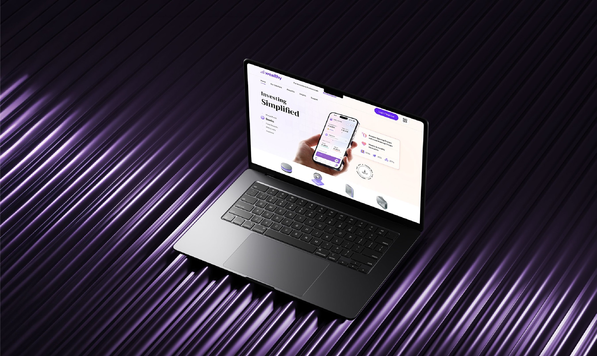
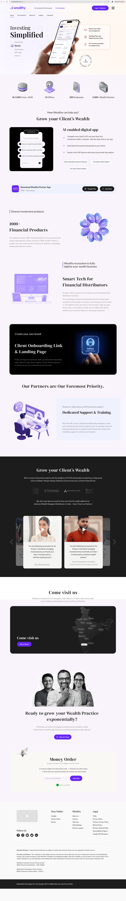
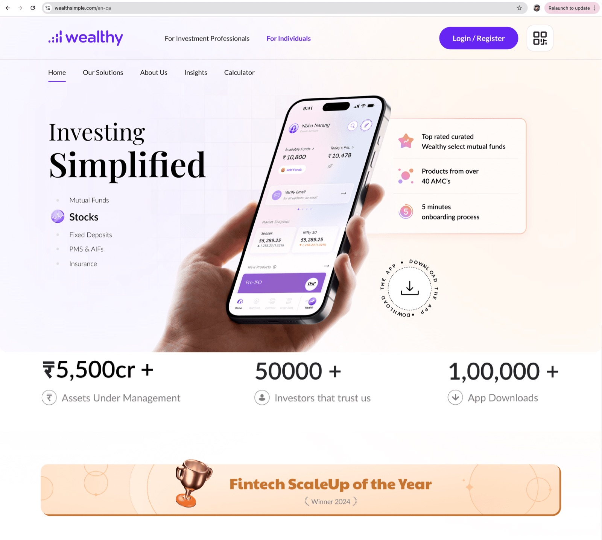
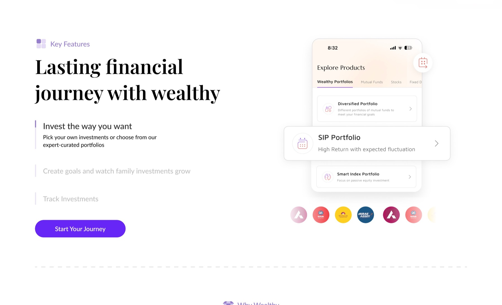
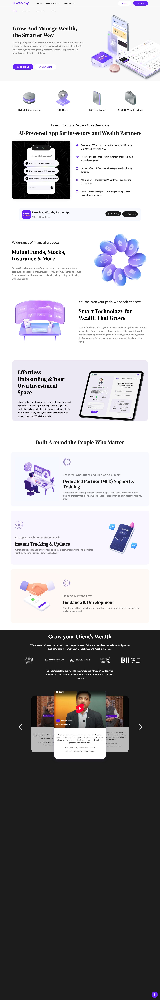
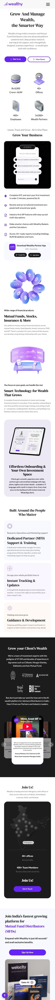
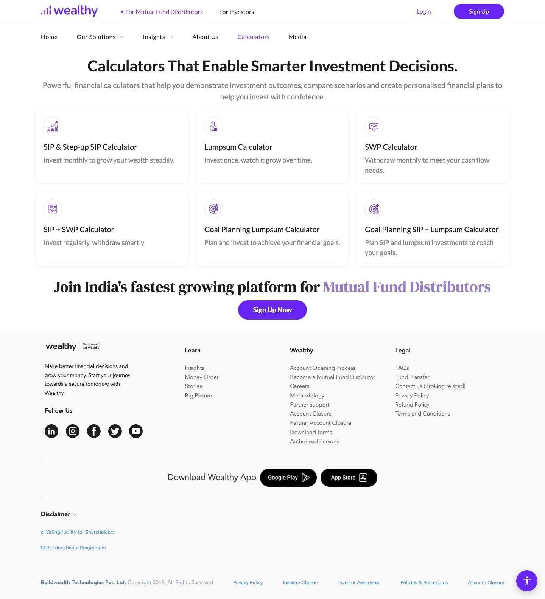
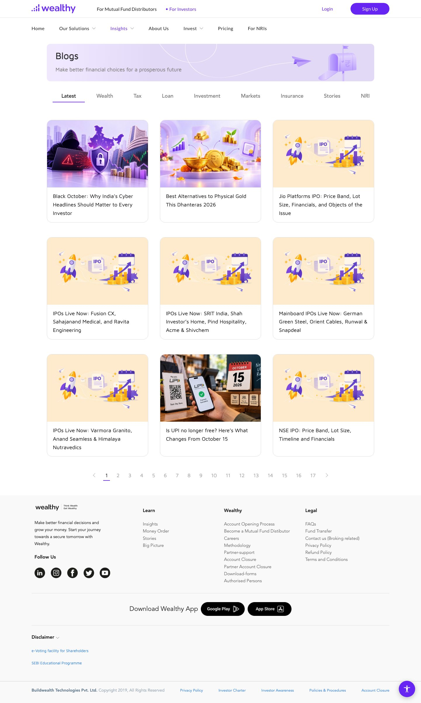

Structured UI focused on trust and demo conversions.

A website UI for Wealthy, a fintech platform built for distributors. The goal: move the site from a long feature list to a clear platform story that earns trust and drives demo bookings.
Scroll the frame to move through the full page design.

Each phase prioritised clarity, hierarchy and conversion, so the experience reflects the scale and technology behind Wealthy.
Each section builds on the previous one.


Captured from wealthy.in with permission. Scroll inside each frame.




Brand purple is used strategically to signal trust and drive action, paired with bold, confident typography that establishes strong hierarchy and clarity.
Focused and outcome driven.